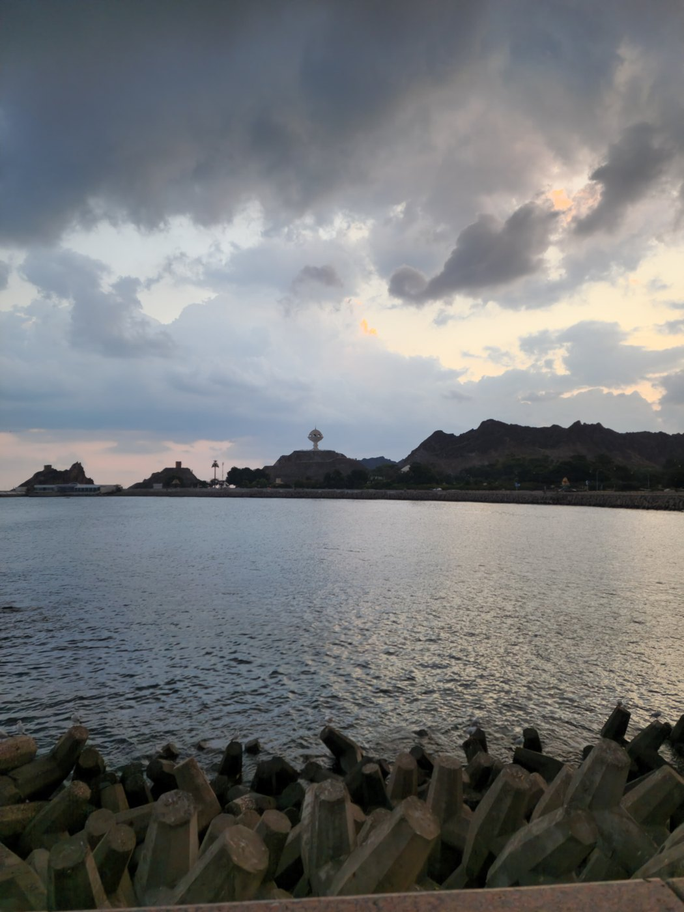

The Arabian Sea as a bridge
Coastal commerce and movement of people connect Oman with South Asia, carrying languages, food and traditions between ports.
RELATIONS & DIPLOMACY
Maritime neighbours connected by history, cultural familiarity and a continuing diplomatic relationship.

THE THREADS THAT CONNECT US
Arabian Sea routes have long linked the ports of Oman with the coast of present-day Pakistan. Trade, migration and family connections give the relationship a human dimension beyond formal diplomacy.
Gwadar is a particularly significant part of that shared history: formerly administered by Oman, it became part of Pakistan in 1958. Its story remains a reminder of the region’s intertwined maritime past.
Explore Oman’s official diplomatic resourcesA SHARED STORY
Coastal commerce and movement of people connect Oman with South Asia, carrying languages, food and traditions between ports.
A defining historical link between the two countries, remembered within a much longer maritime relationship.
Embassies, official dialogue, community life and business connections provide channels for cooperation and mutual understanding.
OFFICIAL CHANNELS
Find official statements, mission directories and diplomatic announcements.
Visit official sourceRead Oman’s official foreign-policy information and bilateral news.
Visit official sourceConsult Pakistan’s Press Information Department for government releases.
Visit official sourceOCTOBER 2026 / VERIFICATION NOTE
A 14 October 2026 announcement supplied in the project brief refers to official-passport visa exemptions, IT and telecommunications, news exchange, media cooperation and archival collaboration. The primary announcement and legal instruments could not be independently accessed during this build.
These topics are presented as a source-verification watch item. This portal does not establish that an agreement is in force or that ordinary passport holders qualify for any exemption.
Read the editorial noteA SHARED HORIZON
Discover the stories, places and possibilities
that bring our two nations together.